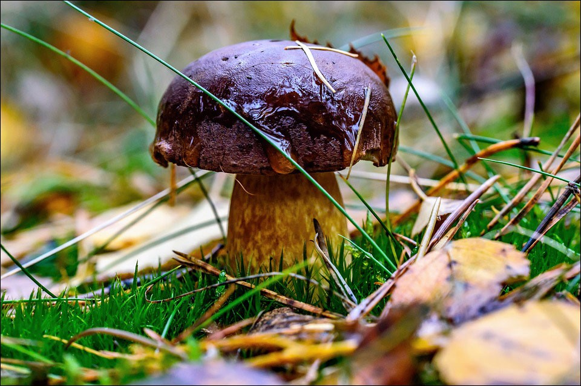
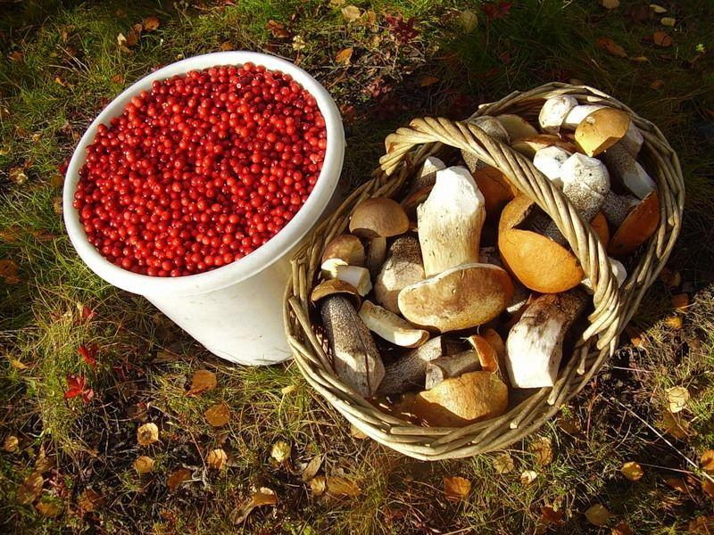
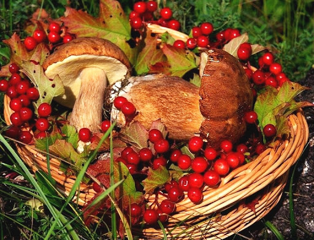
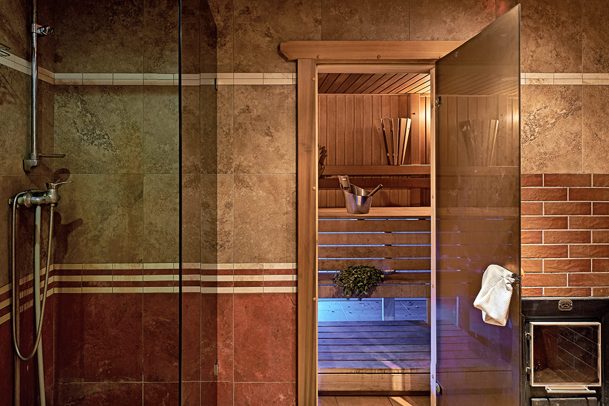
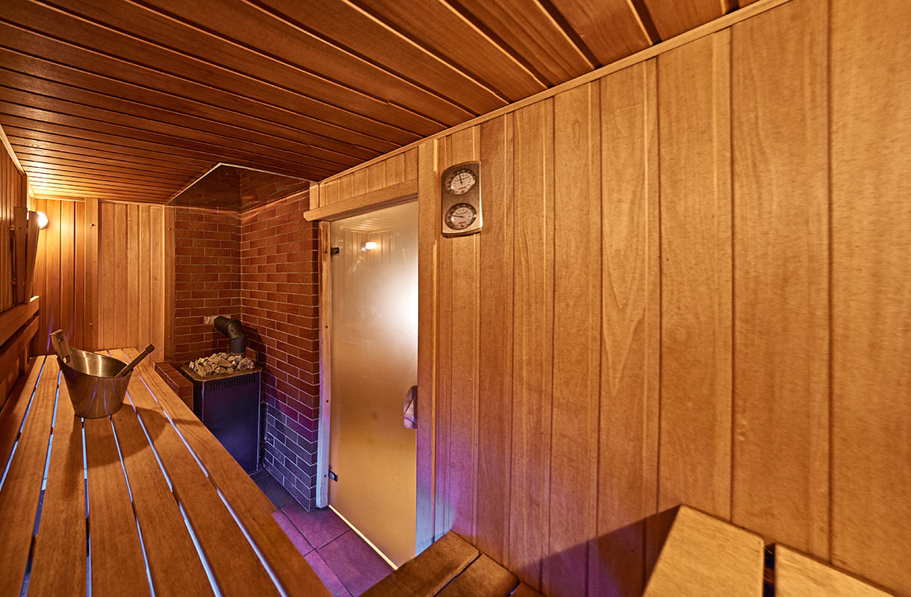
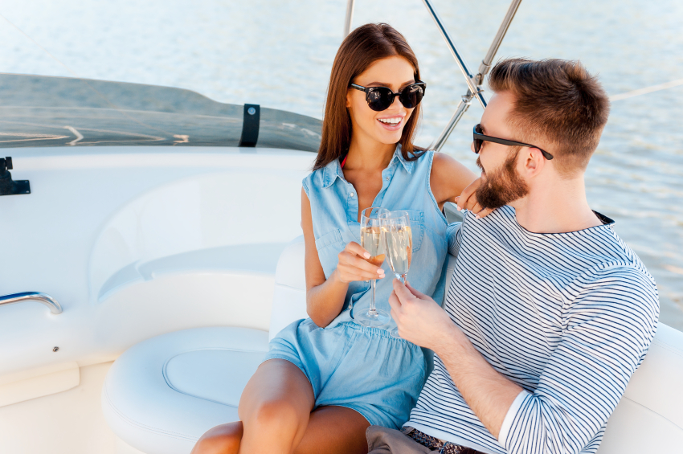
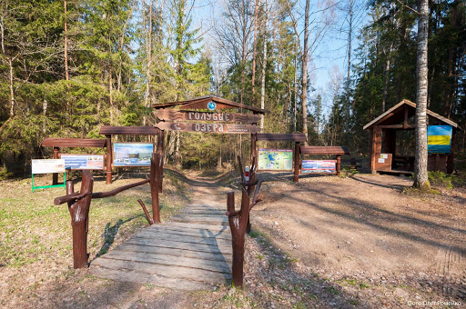
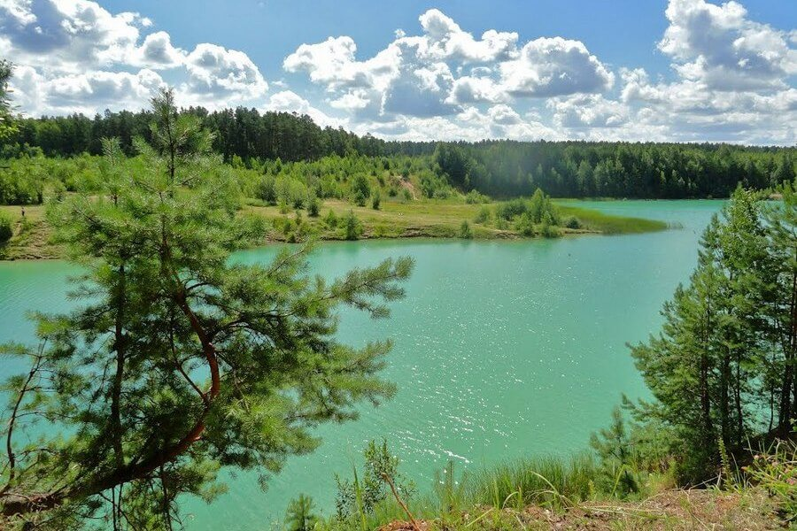

Велопрогулки

У нас вы сможете арендовать велопипед и экипировку. Стоимость аренды велосипеда: 1 час - 1 рубль,
сутки - 6 рублей, стоимость аренды экипировки:1 час - 1 рубль, сутки - 3 рубля.
Предоставляем карту марутов от 3 до 25 км.
Для опытных велопутешественников предлагаем воспользоваться машрутом «Дорогами Межозерья».
Маршрут по культурным ландшафтам «Дорогами Межозерья» предлагает Национальный парк «Нарочанский». На сайте
учреждения можно найти путеводитель по маршруту с отметками наиболее значимых объектов историко-культурного
наследия этого живописного уголка Беларуси. Также для велосипедистов, отдыхающих в агроусадьбах,
«Нарочанский» предлагает маршруты по парку с интересными объектами вблизи усадеб: «Пономарёво», «Свирский
край» и другие. Протяженность маршрута 200 км.Карта машрута
Сбор ягод и грибов
С июня месяца начинается сезон ягод и грибов. Хозяева рекомендуют посещать для этого лесной массив рядом с
«Аптекарским садом» и до границы заповедной зоны Национального парка «Нарочанский».



Рыбалка
Рыбалка, как один из видов досуга в санатории «Нарочь» заслуживает отдельного внимания. На сегодняшний день
рыбаки могут похвастаться богатым уловом, который состоит из щук, окуней, сазанов, лещей и угрей. Рыбалка
благоприятно влияет на здоровье по причине того, что для данного занятия человек долгое время находится на
природе. Стоит отметить, что многие заболевания дыхательной системы достаточно легко излечиваются вблизи
какого-либо водоема.
Правила рыболовства в Национальном парке
Нарачанский
Баня
Традиционная русская баня, растопленная исключительно на дровах, придётся по вкусу даже самым искушённым
ценителям "русского народного СПА". Ощутите на себе эффект проверенного веками средства от стресса и
усталости. Ведь настоящая русская баня - это лучший отдых для души и тела.
Посещение нашей бани подарит вам хорошее настроение, укрепит ваше здоровье.


Прогулка на яхте
Прогулка и отдых на яхте на озере Нарочь – прекрасная альтернатива отдыху на море, доступная каждому!
Насладитесь замечательным отдыхом в уединении и тишине вдали от суеты города и постоянного стресса.
Искупайтесь в чистейшей воде, ощутите свежесть и прохладу ветра, почувствуйте свободу,полюбуйтесь
прекрасными пейзажами Нарочи. Такой красоты вы еще не видели!
Мы предлагаем отдых на яхте по самой
доступной цене. Прогулка на яхте на Нарочи – это прекрасный способ провести лучшие выходные вместе с
семьей, расслабиться в хорошей компании, незабываемо провести время. В вашем распоряжении удобная и
комфортабельная яхта вместимостью 6-8 человек. Кроме того вы сможете самостоятельно управлять парусной
яхтой, ведь мы обучим вас этому совершенно бесплатно!
Также вы можете снять в аренду яхту для того, чтобы отметить праздник, парусная яхта оригинальное место для
проведения Дня Рождения или свадьбы.
Подарите незабываемое приключение себе и своим близким!


Экотропа "Голубые Озера"
"Голубые озера" – уникальный холмисто-озерный природный комплекс Белорусского Поозерья: высокие
холмы чередуются с глубокими озерными котловинами.
Здесь, в районе д.Ольшево оборудована экологическая тропа национального парка.
Маршрут экологической тропы включает в себя оборудованные смотровые площадки, места отдыха, деревянные
скульптурные композиции. Вдоль всей тропы установлены указатели, информационные аншлаги.
Протяженность маршрута 4 км и 7 км. Он проходит по сильно пересеченной местности: гребню озовой гряды,
хвойному лесу, по берегам живописных озер, через реку Страчу и протоки, вдоль заболоченной местности.
Большие площади светлых сосновых боров, смешанных лесов и угрюмых ельников приютили многих птиц и зверей,
следы которых видны повсюду и создают впечатление загадочной волшебной сказки.
По дороге вы познакомитесь с тремя озерами. Озеро Глубля летом в солнечную погоду выделяется прозрачной
чистой водой с голубовато-зеленоватым оттенком, обусловленным светлыми известковистыми донными отложениями.
С ним соединяется небольшим ручейком еще одно необычайно красивое и уникальное по характеристикам озеро
Глубелька, вода у его дна не перемешивалась с поверхностной на протяжении нескольких тысяч лет. А
желтовато-коричневый цвет озера Мертвого обусловлен стоками с болотистых берегов.
Самое увлекательное на маршруте:
- Река Страча в долине и у подножия озовой гряды
- Обзорная площадка "Лысая гора" на вершине холма
- Озера Глубля и Глубелька незабываемой красоты, загадочное Мертвое
- Исполняющая желания сосна "Старый монах"
- Следы деятельности диких животных
- Подкормочная площадка для копытных
- Весной – поляны ветреницы (подснежников), сон-травы, ландышей



{kind=link}